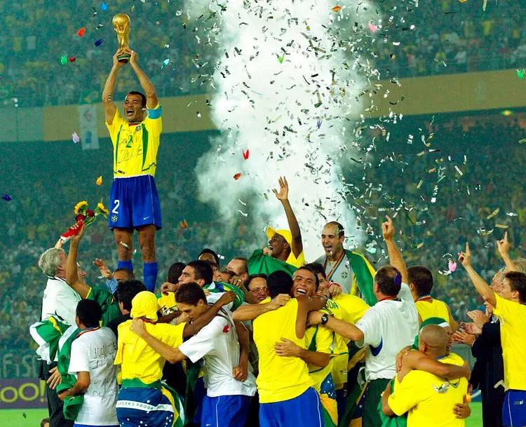
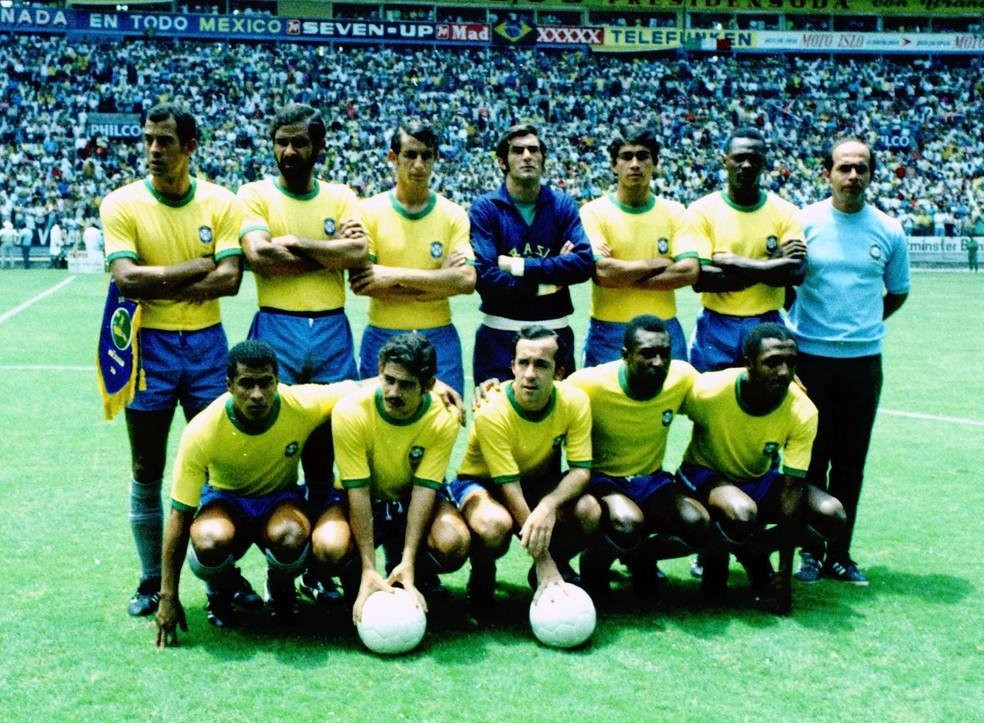

A MAIOR COMPETIÇÃO DO FUTEBOL
COPAS DO MUNDO
Uma competição que reúne nações, desperta paixões e constrói histórias inesquecíveis.

Onde Tudo Começou
A Copa do Mundo é o principal torneio de seleções organizado pela FIFA. Sua primeira edição aconteceu em 1930, no Uruguai.
Desde então, a competição passou a reunir as melhores seleções do planeta em uma disputa pelo título de campeão mundial.
Ao longo das décadas, grandes jogadores, partidas emocionantes e momentos históricos transformaram a Copa em um dos eventos esportivos mais acompanhados do mundo.

ORGULHO NACIONAL
O Brasil nas Copas
A Seleção Brasileira é a maior campeã da história da Copa do Mundo masculina, com cinco títulos.
1958
Suécia
O primeiro título mundial brasileiro, com o jovem Pelé encantando o mundo.
1962
Chile
Com Garrincha como protagonista, o Brasil conquistou seu segundo título.
1970
México
Uma geração histórica conquistou o tricampeonato mundial.
1994
Estados Unidos
Com Romário e Bebeto, o Brasil conquistou o tetracampeonato.
2002
Coreia do Sul e Japão
Liderado por Ronaldo Fenômeno, o Brasil conquistou o pentacampeonato.
5
Estrelas
O maior número de títulos mundiais entre as seleções masculinas.

MÉXICO, 1970
Uma Seleção Imortal
A equipe brasileira de 1970 entrou para a história do futebol. Com jogadores como Pelé, Jairzinho, Tostão e Carlos Alberto Torres, o Brasil conquistou sua terceira Copa do Mundo.
Na final, venceu a Itália por 4 a 1 e garantiu definitivamente a Taça Jules Rimet.
Curiosidades das Copas
Desde 1930
A primeira Copa do Mundo aconteceu no Uruguai, que também foi o primeiro campeão da competição.
Único presente
O Brasil é a única seleção que participou de todas as edições da Copa do Mundo masculina até 2022.
Cinco títulos
O Brasil conquistou cinco vezes o campeonato mundial: 1958, 1962, 1970, 1994 e 2002.
Muito Além de um Troféu
A Copa do Mundo representa a união de povos, a emoção de milhões de torcedores e histórias que atravessam gerações.